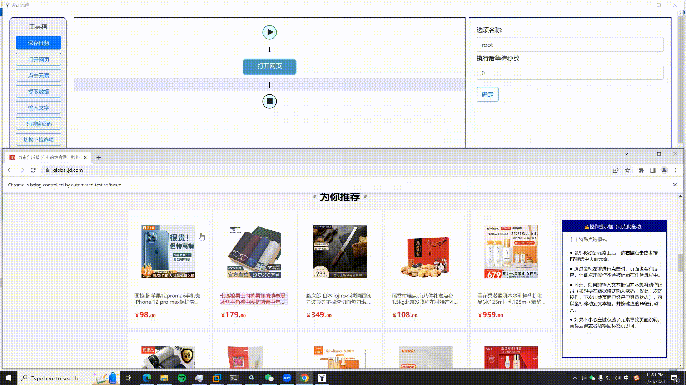
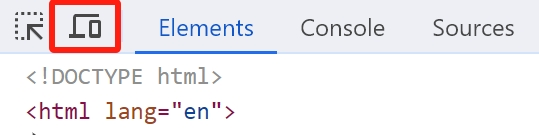
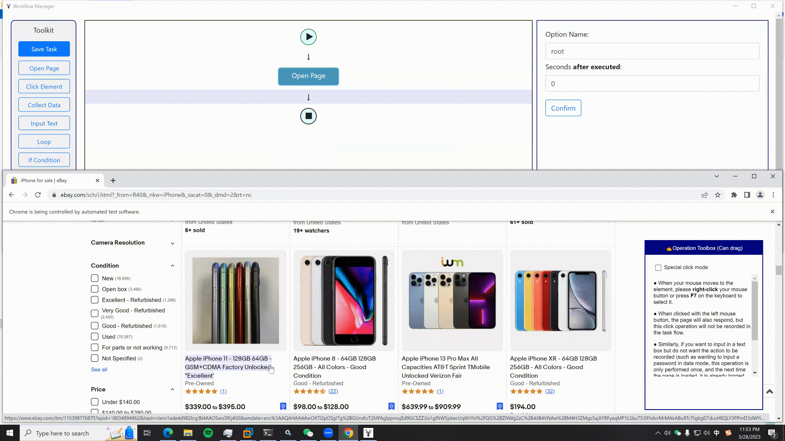

{{"Collect repeated product cards~采集重复的商品卡片" | lang}}
{{"Right-click a product card, then choose Select All → Select Sub-elements → Collect Data.~右键一个商品卡片，依次选择“选中全部”→“选中子元素”→“采集数据”。" | lang}}

{{"Start with a web address, then select content and actions in the design browser.~从一个网页地址开始，在设计浏览器中选择内容与操作。" | lang}}
{{"One complete URL per line. The first URL opens first in the design browser.~每行填写一个完整网址，设计浏览器会优先打开第一个地址。" | lang}}
{{"Select page elements after the browser opens to create your workflow.~浏览器打开后，选择页面元素即可创建流程。" | lang}}
{{"Choose a phone profile in the browser device toolbar, keep zoom at 100%, then refresh before designing.~请在浏览器设备工具栏中选择手机型号，将缩放比例保持为 100%，刷新页面后开始设计。" | lang}}

{{"Right-click a product card, then choose Select All → Select Sub-elements → Collect Data.~右键一个商品卡片，依次选择“选中全部”→“选中子元素”→“采集数据”。" | lang}}

{{"Right-click a title and choose Select All → Collect Data. Repeat with a price to add it as another field.~右键一个商品标题，选择“选中全部”→“采集数据”。再对价格重复此操作，将价格添加为另一个字段。" | lang}}
